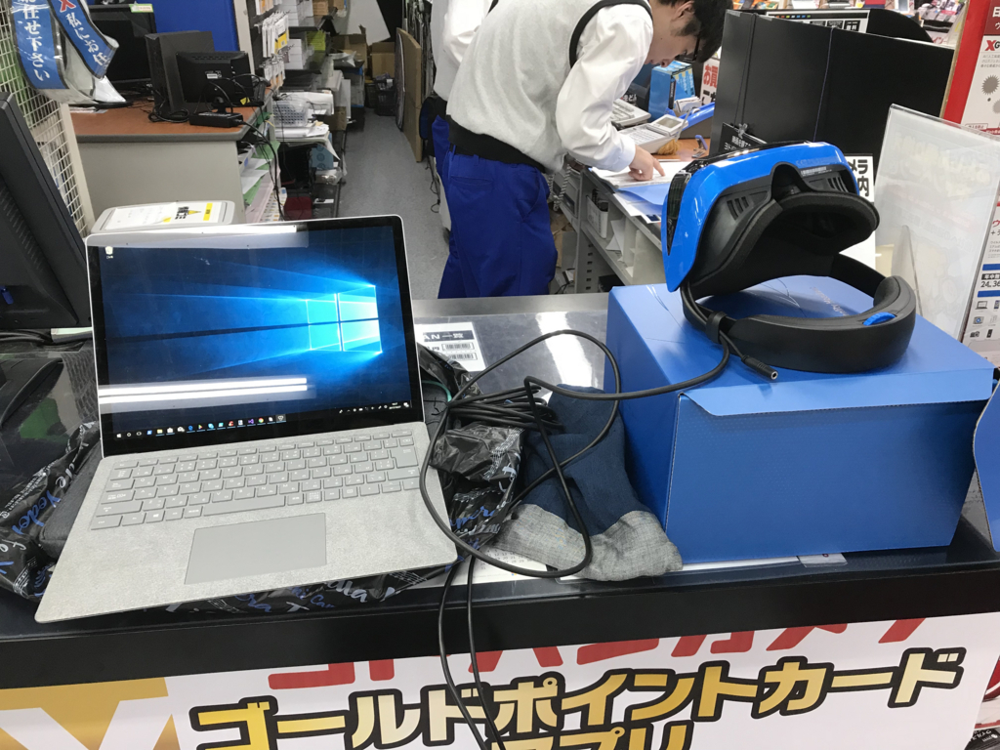
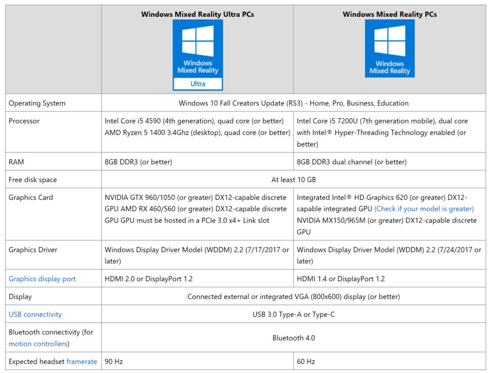
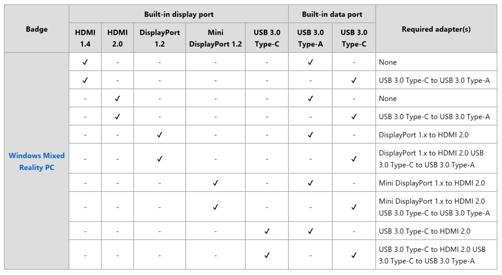
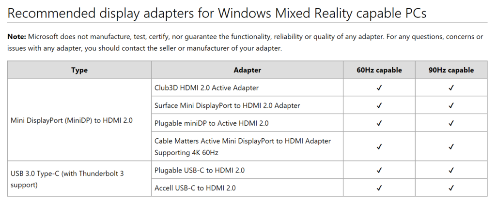
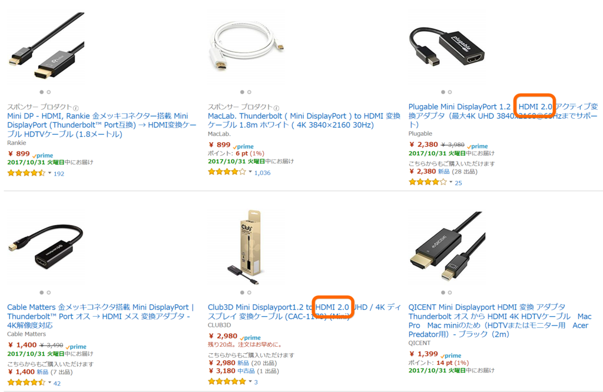

Surface Laptop で Acer の MR ヘッドセットを動かすまでの苦労（物理
執筆日時：

手持ちの Surface Laptop で Acer の MR ヘッドセットが動かなかった話の続き。
今は東京に滞在している関係で手持ちのデバイスが少なく、何が原因か十分に調査するのは半ばあきらめていたのですが、アキバのヨドバシカメラさんのご協力もあっていろいろ調査できました（後述）。ヨドバシカメラさん、ありがとうございます！ Book 2 を買うときはヨドバシにします。みんなもヨドバシでもっと買おうぜ！（回し者
さて、結論から言うと、Mini DisplayPort → HDMI アダプターを HDMI 2.0 に対応したアダプターに取り換えるのが正解。Surface Laptop でも Acer の MR ヘッドセットが動きました。
なぜか Surface 純正のアダプターでは動かなかったのですが（後述）、ダメ元で互換リストに載っていた他のアダプター（Club3D）を取り寄せたところ、ちゃんと動きました。今、Amazon のセール中でちょっと安いので、確保しておくといいかもしれない。
 (Mini)")
Club3D Mini Displayport1.2 to HDMI 2.0 UHD / 4K ディスプレイ 変換ケーブル (CAC-1170) (Mini)
- 出版社/メーカー: CLUB3D
- メディア: Personal Computers
- この商品を含むブログを見る
ここからは時系列順にグダグダ書くので、興味がない人は読まなくてもいいデス。
まずちゃんと復習しておくと、Windows Mixed Reality には2つのスペックがある。
- Windows Mixed Reality Ultra
- Windows Mixed Reality（無印）

Windows Mixed Reality minimum PC hardware compatibility guidelines
Ultra の方がいろいろできるけど、とりあえず無印でも十分楽しめる感じ。Surface Laptop の場合、GPU の関係で Ultra を満たすことはできないけど、i5/8GB モデルなら無印に対応するはずです。ただし、Mini DisplayPort を HDMI へ変換する必要があります。

Recommended adapters for Windows Mixed Reality Capable PCs
Surface Laptop の場合はビルトインの Mini DisplayPort と USB-A があるので、"DisplayPort 1.x to HDMI 2.0"が必要。

ヨドバシカメラ（秋葉原店）でアダプターを探したところ、2F で売ってるアダプターはことごとく HDMI 1.4 準拠だったので、Amazon で取り寄せるのがよさげです。HDMI のバージョンを書いてない商品があったので、封を切って持ち込みの機材（Surface Laptop＋MR ヘッドセット）で試させてもらったのですが、どれも動きませんでした。

（値段の安さに惑わされず、"HDMI 2.0"とか"アクティブ"とか書いてあるやつを選ぶんだぜ？）
互換リストにあるアダプターでは、唯一 Microsoft Surface 純正のものが1階の Surface コーナーで手に入ります。

マイクロソフト Surface Mini Display Port HD AVアダプター（HDMI出力アダプター）ミニディスプレイポート EJT-00007(HDAVアダプタ
- 出版社/メーカー: マイクロソフト
- メディア: エレクトロニクス
- この商品を含むブログを見る
こいつは他の類似品より2,000円以上高いですが、まぁ、純正なので安心ではないかと思……うじゃろ？
しかーし！
念のため実機で試させてほしいと頼み込んで、展示機からアダプターをブッコ抜いて自分の機材で試させてもらったところ、HDMI 2.0 ではないアダプターのときと同様、画面が明滅してうまく動きませんでした。
純正アダプターでもダメとなると、そもそも MR デバイスがダメなのか？
気になったので、店員さんに頼み込んで展示機で片っ端から試させてもらいました。Surface Book（初代）は盗難防止器が HDMI コネクターに接続するタイプだったので、主に Surface Pro や Surface Laptop が対象です。
- Surface Pro：Fall Creators Update にアップデートしていない端末が多かった（動かない）。CPU は基準をクリアしていても、メインメモリが足りない（4GB）モデルもあって、試せる範囲では動作する端末が一台もなかった（お客さんが触ってるのまでどけて試すわけにはいかないので、一部だけど）。
- Surface Laptop：よく考えたら売ってる状態の Surface Laptop は Windows S なので Mixed Reality は動かなかった。
最後に盗難防止器をわざわざ外してもらって、Surface Book（初代）で試したところ……
- Surface Book: WDDM のドライバーが対応していなかった
そういえば @mitsuba_yu がそんなこと言ってましたっけね……忘れてたorz
とにかく、あれだけ Surface だらけな空間なのに動く端末が一台もなくて、結局何が悪いのかよくわからなかったです。アダプターも購入せずじまいだったし、お店の人だけ散々振り回して大変申し訳なかった……。
しかも、冒頭で記述した通り、結局は Amazon から取り寄せた Club3D のアダプターでちゃんと動いたので Surface Laptop や MR デバイスの問題ではなかった模様。コントローラーをシャンシャンしながら一通りバーチャルなデスクトップを堪能したのち、「また、面白そうなゲームでも出たら遊ぶか」とヘッドセットとコントローラーは箱にしまいました。めでたしめでたし。
Windows MR 対応な Surface は、今度発売の Book 2 が本命になるのかなぁ？ これも実際に試してみないことには何とも言えないけど。
追伸
最初に USB を挿したときにエラーになる原因もわかってないですが、それは抜き差しで直るので別にいいかなって感じです。